75 - Intalacion del motor de base de datos SQL Server |
Procederemos a instalar el motor de base de datos SQL Server con el objetivo de confeccionar aplicaciones en C# que puedan acceder a una base de datos (si ya tiene instalado el SQL Server puede obviar este concepto)
Vamos a utilizar la versión SQL Server Express que la podemos descargar en forma gratuita del sitio de Microsoft.
Descargaremos el SQL Server de 64bit (si tiene un sistema operativo con dichas características):
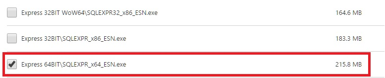Y también descargaremos el Microsoft® SQL Server Management Studio, que nos permitirá administrar las bases de datos (crearlas por ejemplo):
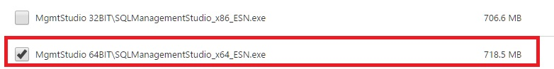Ejecutamos el primer archivo que descargamos (Motor de base de datos SQL Server) SQLEXPR_x64_ESN.exe y seguimos las instrucciones que nos propone el diálogo (Elegimos nueva instalación independiente):
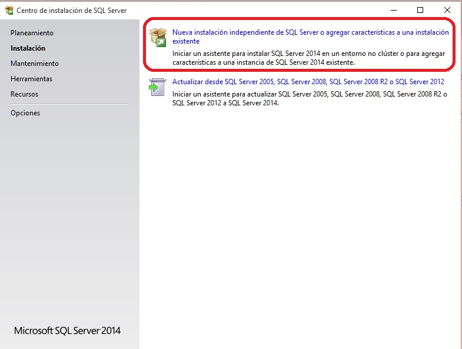En el siguiente diálogo aceptamos los términos y condiciones:
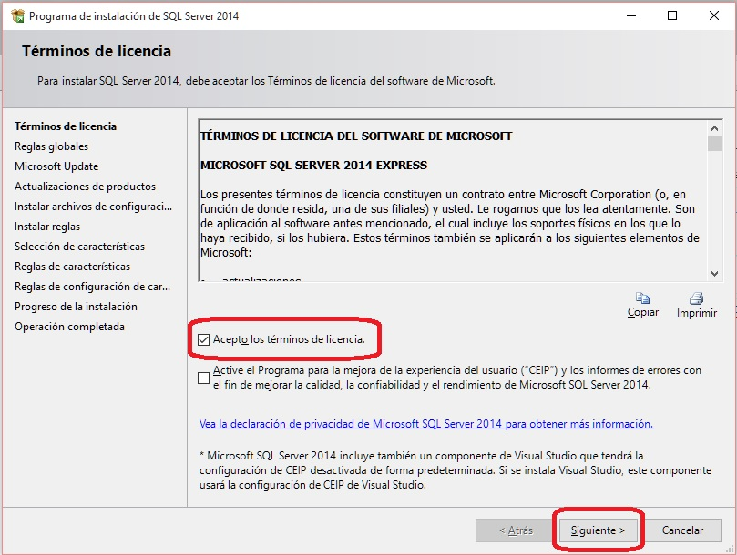El siguiente diálogo muestra si el equipo tiene todo el software necesario o nos indica que hacer (por ejemplo reiniciar el equipo):
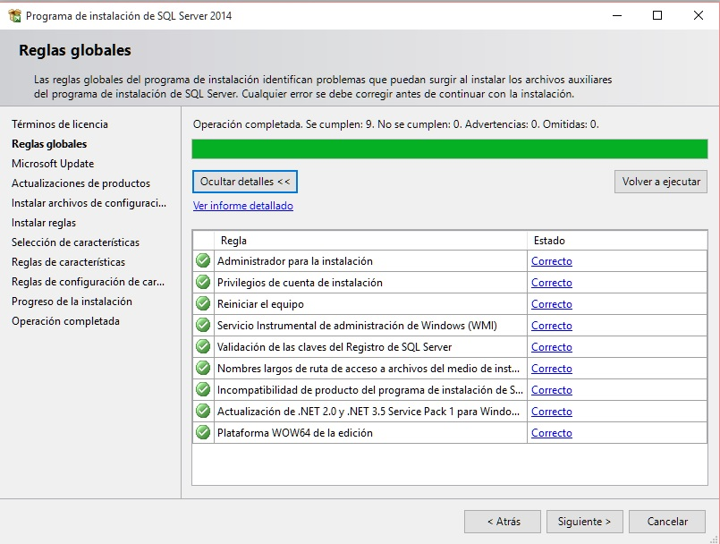El siguiente paso nos invita a activar las actualizaciones automáticas (podemos o no tildar):
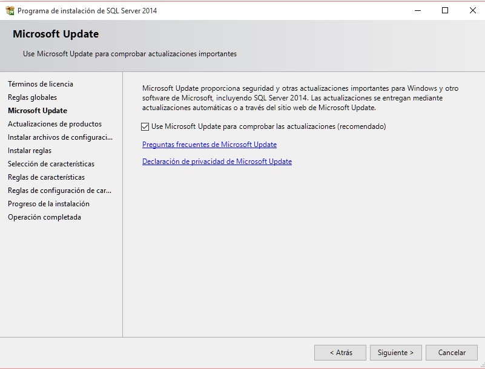En la "Selección de características" dejamos los datos por defecto:
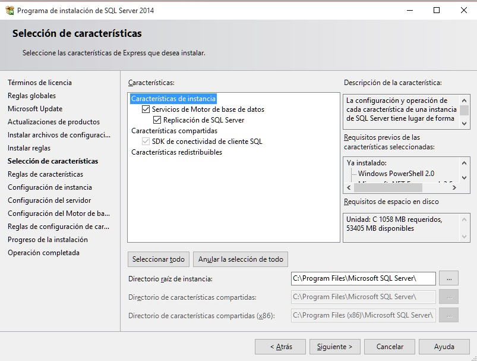También dejaremos por defecto los valores para la identificación de instancia:
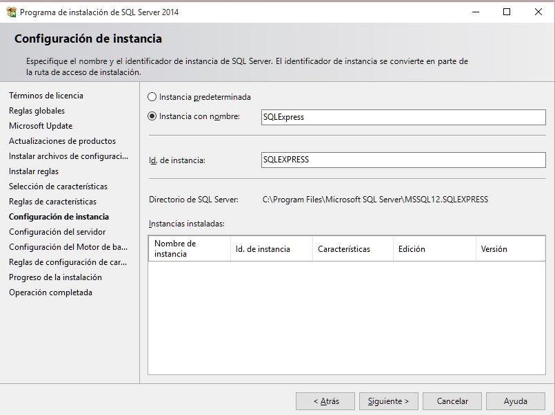Datos por defecto para la "Configuración del Servidor":
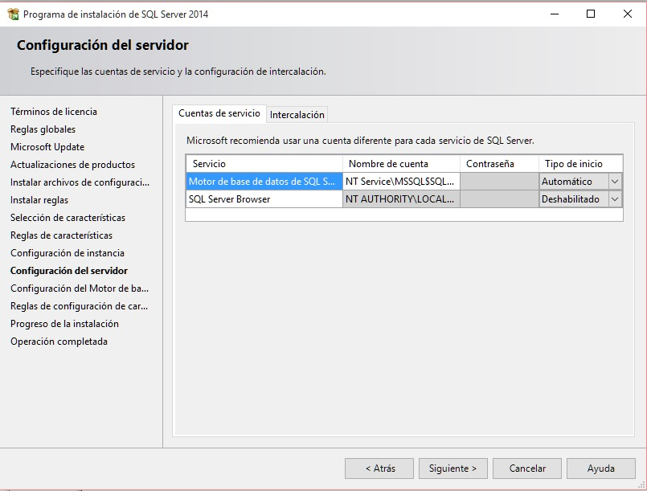No cambiamos datos la "Configuración del Motor de Base de Datos:
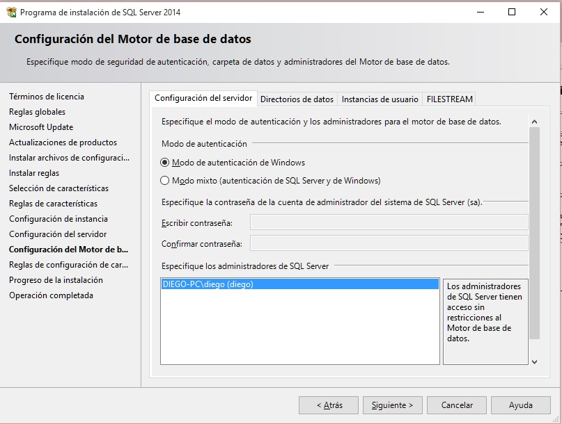Luego de este paso ya tenemos instalado el SQL Server en nuestro equipo:
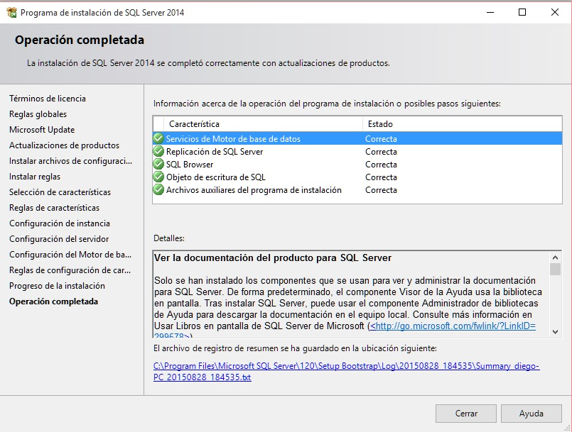